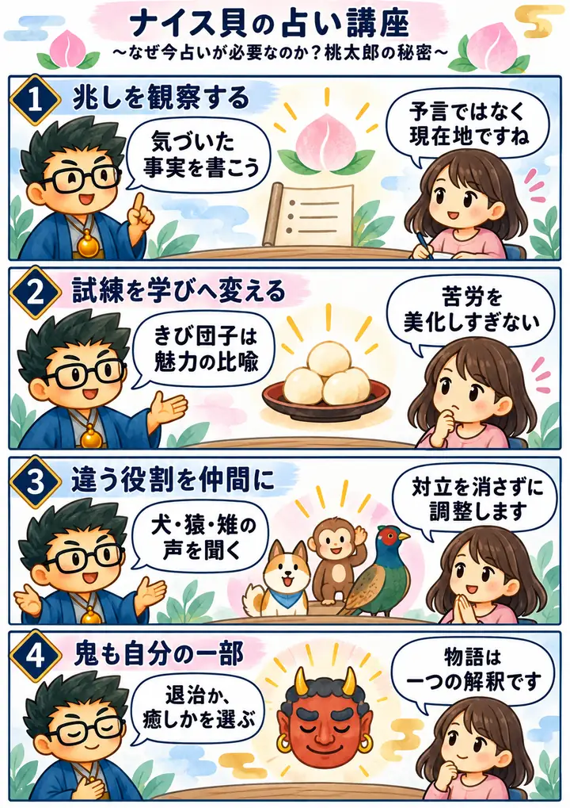

2025年 無料講座・第9回
なぜ今「占い」が必要なのか？桃太郎の秘密
この回の要約
占いを「未来の断定」ではなく、兆しを観察し、自分の選択を考えるための道具として捉え直す回です。
前半は、干支を十二支だけでなく十干と十二支の組み合わせとして読み、時計や暦の循環へ話を広げます。中盤は桃太郎を、兆しをつかみ、異なる役割の仲間と試練を越える物語として読み直します。後半は講師自身の複数の占術結果を重ね、無料モニター鑑定で何を確かめようとしているかを説明します。
桃太郎、鬼、神社、歴史、相場、魂、未来に関する説明には講師独自の象徴解釈が含まれます。昔話や史実の唯一の正解ではなく、自分の状況を考える一つの見方として扱います。
4コマ漫画でつかむ

タイムスタンプ
時間を押すと、上の動画がその場面から再生されます。
覚えておきたいこと
- 干支は文脈により十二支を指す場合と、十干十二支の組み合わせを指す場合がある。
- 兆しは未来の断定ではなく、現在の変化を観察して選択を考える材料にする。
- 桃太郎の読み解きは講師の象徴解釈であり、昔話や歴史の唯一の正解ではない。
- 異なる役割の対立は、第三の視点を加えることで調整できる。
- 複数の占術は人物を固定するためでなく、本人へ質問する角度を増やすために使う。
- 鑑定データは必要最小限にし、本人の同意と入力先を確認する。
復習ポイント
講義内の占術上の説明・時代の読み・象徴的な解釈は、講師の見立てです。客観的な事実や将来を保証するものではありません。